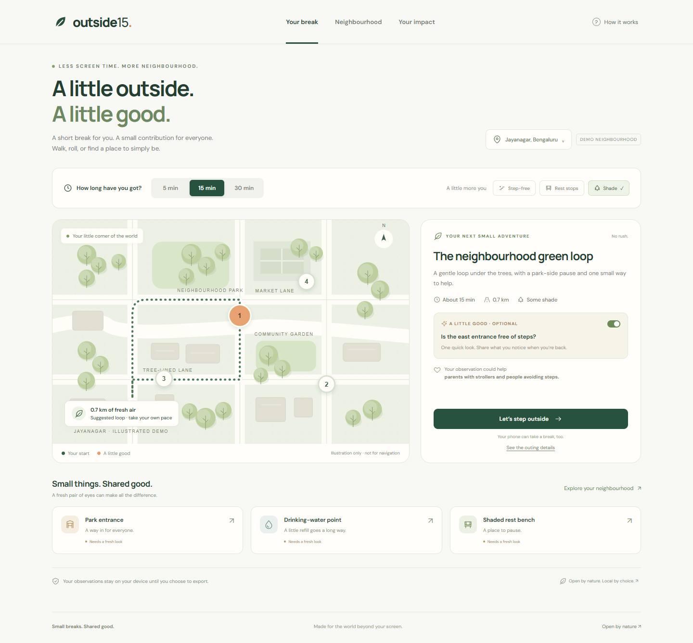
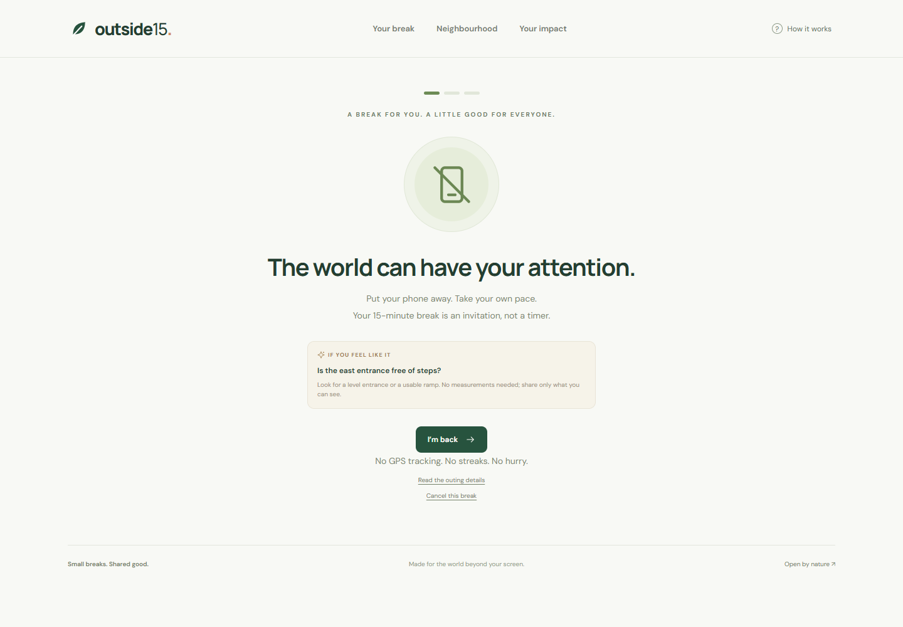
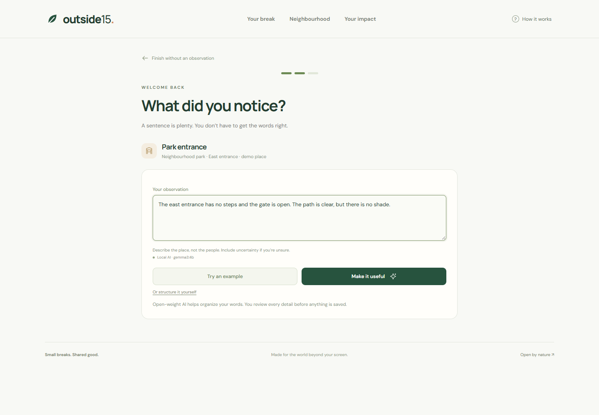
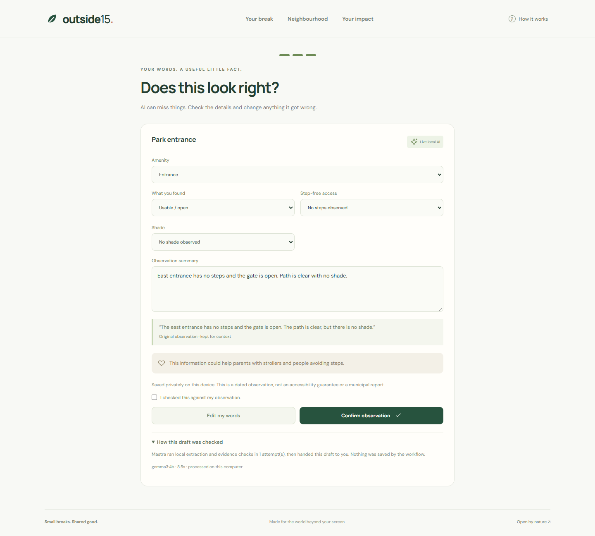
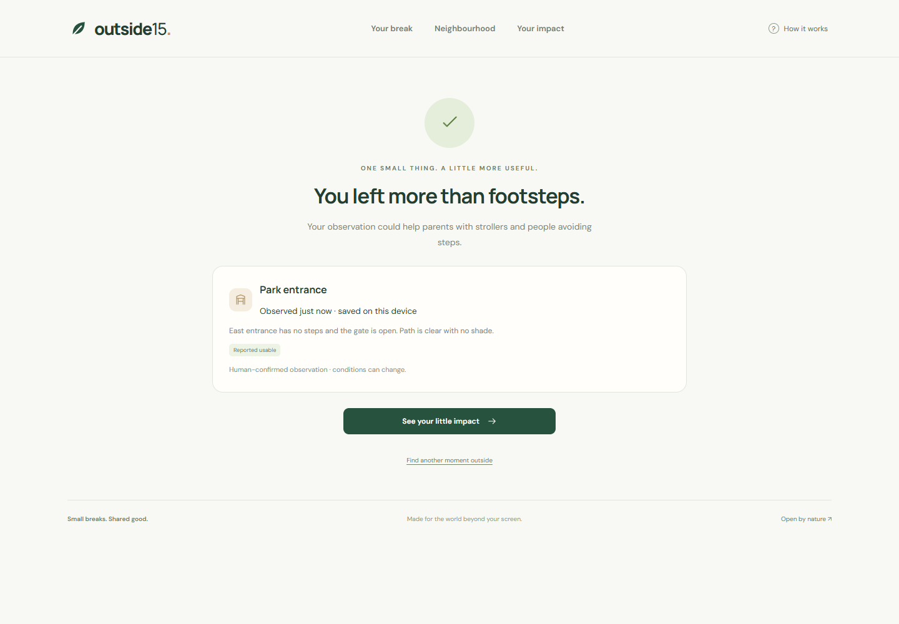
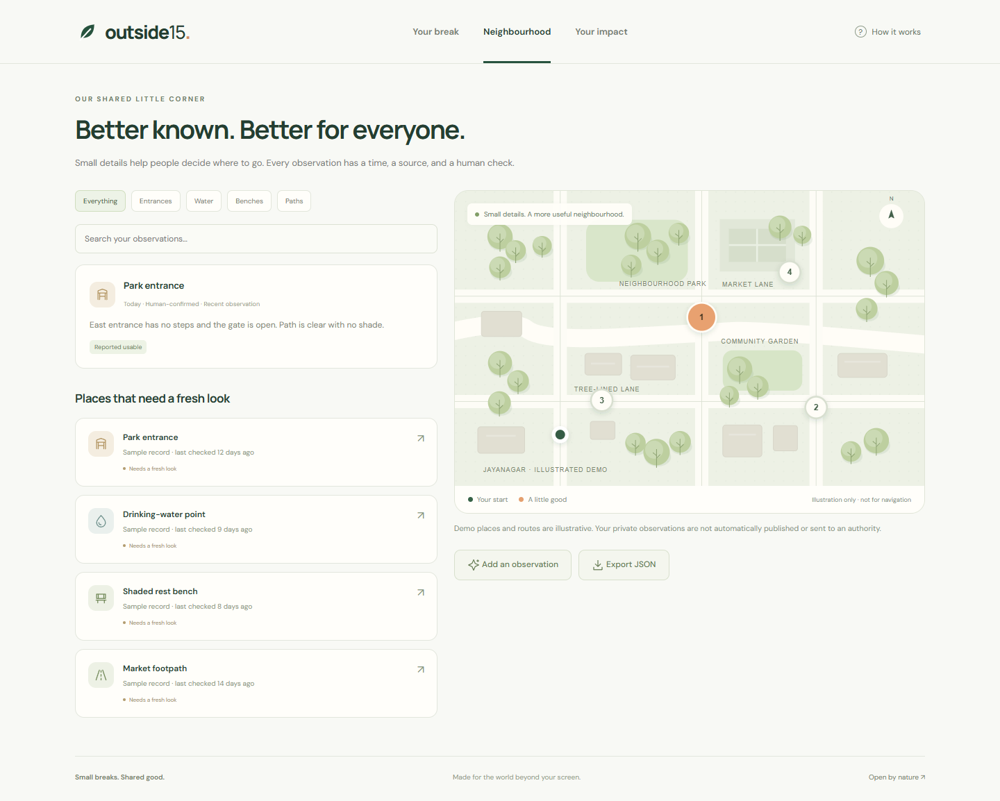
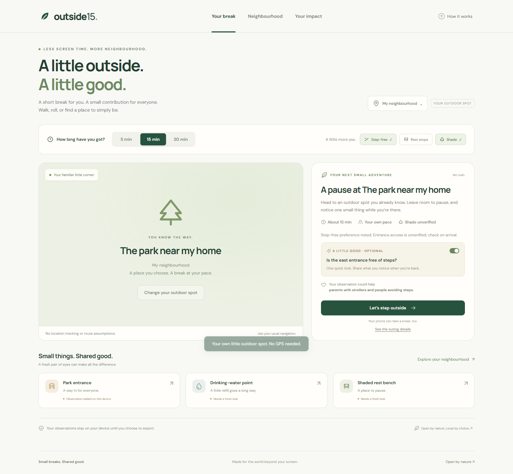
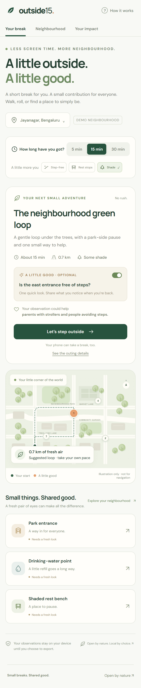

The product walkthrough
A little outside. A little good.
A short outdoor break with one optional contribution. See the complete loop, including real open-weight AI inference, human review, and private observations.
Silent video with on-screen captions. Illustrative places; outdoor break simulated. Local Gemma 3 4B inference is real. The hosted app offers a recorded example and manual entry; live inference runs in the local edition.
Try Outside15 ↗Inspect the Gemma evaluation and Mastra recovery evidence ↗
Small moments, from start to shared good.
















Gemma + Mastra · Original illustrations · No GPS tracking · No analytics